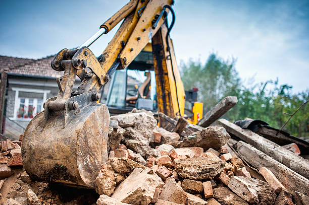
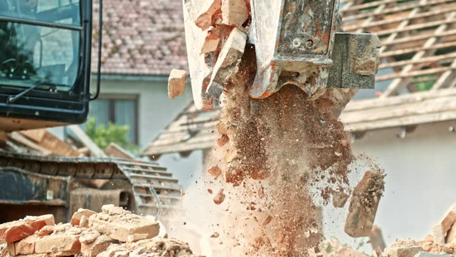
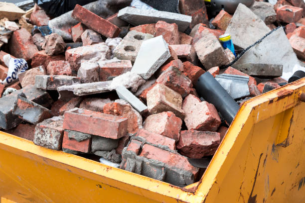

Expert building demolition services help pave the way for new opportunities. We’re committed to safety and sustainability in every project.
Choose our building demolition services for reliable, safe demolitions. We handle projects of all sizes in Usa - Nationwide with the utmost care. Get your free estimate now!
Residential & commercial Demolition
Quality services at affordable prices
Immediate 24/ 7 emergency services


When you decide to embark on a demolition project, the first step is to find reliable and experienced demolition contractors near you. At Demolition, we pride ourselves on our comprehensive range of demolition services tailored to meet your specific needs . Locally based, our team understands the nuances of local regulations and zoning laws, which allows us to execute projects efficiently and within legal parameters.
Choosing our team means you're opting for industry-leading expertise and the utmost professionalism. We leverage cutting-edge technology alongside proven methodologies to ensure the safety and quality of all our work. Our commitment to environmentally responsible practices means we carefully handle all debris and materials, ensuring a clean slate for your next project. There's no need to compromise on quality when you can depend on our seasoned demolition contractors who prioritize your satisfaction above all.

Residential demolition can be a daunting task, but with Demolition, you can rest assured that you’re in capable hands. Our experienced team understands the sensitivity required for demolishing residential properties while respecting the environments around them. Whether you’re undergoing a significant renovation or need to remove an old structure, our residential demolition services are thorough, safe, and reliable. We use state-of-the-art machinery and methods to mitigate environmental impact and ensure debris is removed cleanly. With a reputation for excellence, we are the best choice for homeowners looking for affordable yet high-quality demolition services.

In the heart of any thriving business lies a commitment to expansion and improvement, and commercial demolition plays a critical role in this process. At Demolition, our commercial demolition contractors are adept at managing demolition projects of all sizes, ensuring your business can continue to serve clients with minimal interruption.
We understand the complexity of commercial projects, and our team is equipped to handle hazardous materials, structural challenges, and environmental regulations. Our projects are completed on time and within budget, reflecting our dedication to quality craftsmanship and customer satisfaction. We employ advanced techniques that minimize noise and dust, making us the preferred choice for businesses looking for reliable demolition services. Let us help you pave the way for your next big venture!
If you're planning to demolish your house, whether for new construction or a revitalization project, Demolition offers comprehensive house demolition services tailored to fit your needs. Our team prioritizes safety and efficiency, ensuring that all structural demolition is performed with utmost care. We are fully licensed and insured, giving you peace of mind throughout the demolition process. Our experience in house demolition means we understand the local zoning laws and environmental regulations, making us the best choice for your project.

When it comes to renovations or remodeling projects, interior demolition is often needed to achieve the desired transformation. At Demolition, our skilled interior demolition contractors specialize in safely removing non-structural components, including walls, ceilings, and fixtures, all while minimizing disruption to the rest of the space.
Our approach emphasizes safety and precision, allowing you to maintain your vision for a beautiful, functional space. We understand the importance of timelines in renovation projects, and we work diligently to keep on schedule while adhering to the highest standards of safety. Trust our reliable team in Usa - Nationwide to handle your interior demolition needs with care and expertise.
Concrete poses unique challenges during demolition, but our skilled professionals at Demolition are equipped to handle these challenges with ease. Our concrete demolition services include breaking and removal of concrete structures such as driveways, sidewalks, and foundations. Utilizing advanced equipment and techniques, we ensure the process is efficient and minimizes disruption to your property. We also focus on recycling concrete materials whenever possible, making our services environmentally friendly. Rely on us for concrete demolition – we are dedicated to providing the highest standards of work and safety.

Garage demolition can open up valuable space and transform your property. At Demolition, we provide tailored garage demolition services that meet the specific needs of our clients. Whether you’re looking to downsize or repurpose the area for a new project, our team is ready to assist.
We ensure that all safety protocols are followed and that the project is conducted without disrupting your property or surroundings. Our experienced team is equipped to handle the challenges that come with garage demolition, including debris removal and disposal, so you can focus on your future plans for the area. Choose us for efficient, professional garage demolition services .

Industrial demolition requires a specific set of skills and expertise that our company provides in Usa - Nationwide. Our industrial demolition services are tailored to large-scale projects, such as factories and manufacturing plants. We prioritize safety and efficiency, recognizing the unique challenges inherent to industrial structures. Our experienced team works alongside you to ensure all operations are conducted seamlessly, minimizing downtime and disruptions. With state-of-the-art equipment and a commitment to minimizing environmental impact, we are the industry leaders in industrial demolition.

Selective demolition is ideal for clients who wish to preserve certain elements of a structure while removing others. Our selective demolition services in Usa - Nationwide focus on dismantling specific parts of a building safely and effectively. We excel at projects that require careful planning and precision, ensuring that surrounding areas remain untouched. Our skilled technicians identify which materials can be salvaged or recycled, aligning with eco-friendly practices. You can trust us to deliver high-quality results with minimal disruption, making us the preferred choice for selective demolition.

When searching for the best demolition companies look no further than our dedicated team. Our commitment to delivering high-quality demolitions is reflected in our satisfied customers and exemplary reviews. We take safety seriously and utilize modern techniques and machinery to provide effective and compliant services. Our proactive communication throughout the process sets us apart, ensuring you are kept informed and at ease from start to finish. We pride ourselves on our affordable pricing without sacrificing quality, making us the top choice for any demolition needs.

At Demolition, we believe that quality demolition services should be accessible to everyone. Our affordable demolition services offer outstanding value without compromising on safety or quality. We work diligently to provide precise quotes and work within your budget, ensuring that you receive the best possible service for your investment. Whether you need residential or commercial demolition, we tailor our services to meet your budgetary constraints while maintaining high standards. Trust us in Usa - Nationwide to deliver effective and affordable demolition solutions.

After a demolition project, debris removal can be one of the most daunting tasks. Our demolition and hauling services include not only the safe demolition of structures but also the responsible removal of debris. Our team ensures that all remnants are cleared promptly and in compliance with local regulations. We aim to transform your site into a clean slate ready for whatever comes next. Utilizing environmentally friendly disposal methods, we ensure that recyclable materials are processed appropriately, promoting sustainability through every phase of your project.

Emergencies can happen at any time, and when they do, you need a demolition service that is quick and reliable. Demolition offers emergency demolition services for situations that require immediate attention, such as damage from natural disasters, structural failures, or hazardous materials. Our team is always ready to respond swiftly, assessing the situation, and providing safe and effective solutions. We strive to keep you informed throughout the process, ensuring that your needs are prioritized. In Usa - Nationwide, we are your steadfast partner in times of crisis.

Preparing a site for construction or renovation often starts with land clearing and demolition. At Demolition, we specialize in both services to help you begin your project on solid ground. Our skilled team is equipped to handle any size of land clearing or demolition project, ensuring that all structures and debris are removed efficiently and safely. We follow all local regulations and focus on increasing the usability of your land by removing unwanted materials and structures. Let us help you prepare your site for new opportunities.

Finding a reliable demolition company nearby is essential for any demolition project. At Demolition, we are proud to serve the residents and businesses of Usa - Nationwide with a comprehensive range of demolition services. Our experienced professionals understand the unique challenges of local projects and work diligently to overcome them. We prioritize customer satisfaction, safety, and efficiency in everything we do. Whether you’re planning a small residential demolition or a large commercial project, choose us for dependable and hardworking service right in your area.

Debris aftermath from any demolition can be overwhelming. Our demolition debris removal services ensure that you are left with a clean and clear site after your project. We take the stress out of debris removal by efficiently handling everything from small residential cleanups to larger commercial site clearances. Our team adheres to eco-friendly disposal practices, recycling materials whenever possible. With our reliable service, you can rest assured that your property will be in excellent condition when it’s time to move forward.

After a demolition project, site clearing is crucial for preparing the land for its next purpose. Demolition provides comprehensive demolition and site clearing services designed to get your property ready for development or construction. Our dedicated team uses the latest equipment and techniques to ensure that your site is thoroughly cleared of all debris, rubble, and hazards. We pride ourselves on efficient work that respects the timeline and safety needs of each project in Usa - Nationwide. Partner with us for thorough site clearing following demolition.

Asbestos is a serious hazard that requires careful handling and removal before any demolition activities can commence. At Demolition, our asbestos removal and demolition services are compliant with all EPA and state regulations. Our trained professionals are equipped to identify, handle and safely remove asbestos, allowing you to move forward with your demolition project safely.
We are committed to ensuring the highest standards of safety and thoroughness in our asbestos removal processes, prioritizing your health and that of the environment. You can trust us to conduct your asbestos removal with the utmost care and professionalism, easing your concerns while laying the groundwork for your next project.

Remodeling a home or commercial space often requires careful demolition work to create the desired layout and functionality. At Demolition, our demolition services for remodels are specifically designed to minimize disruption while achieving your project goals. Our skilled team works with clients to understand their vision, providing advice and support throughout the demolition phase.
We utilize state-of-the-art tools and techniques to ensure that demolition is executed safely and efficiently, preserving the integrity of the areas that will remain intact. Trust us to provide reliable and professional demolition services in Usa - Nationwide tailored to your remodeling needs.

For any structure demolition project, hiring experienced contractors is vital. Our structure demolition contractors in Usa - Nationwide specialize in safely and efficiently bringing down new and old structures alike. Equipped with state-of-the-art machinery and techniques, we ensure that each project is handled correctly and in compliance with all local laws. Our methodical approach allows us to assess individual project needs, resulting in a tailored service designed to maximize safety and efficiency. Choose our expert contractors for a hassle-free demolition experience that prioritizes professionalism and quality.

If you’re looking to remove an old pool, our pool demolition contractors at Demolition have the expertise and equipment to get the job done right. Pool removal involves not only demolishing the pool structure but also restoring the surrounding area for its future use. We specialize in safe and efficient pool demolition, minimizing disruption to your property. Our commitment to professionalism means you can trust us for thorough project management. Contact us today to discuss your pool demolition needs, and let us help you reclaim your outdoor space.

Preparing a site for new construction often requires careful demolition to ensure a solid foundation for your future projects. At Demolition, we offer specialized demolition services for new construction designed to facilitate a fresh start for any new build.
Our team demonstrates punctuality, professionalism, and a commitment to excellence, ensuring that your demolition is managed effectively and efficiently. We take the necessary precautions to manage safety risks and environmental factors, allowing you to focus on designing and building your vision. Trust us as your partner in paving the way for your next construction project.

When precision is paramount, our controlled demolition services at Demolition are unmatched. We specialize in strategic demolition that focuses on minimizing risks and controlling debris and dust. Our team uses advanced techniques to ensure that only targeted parts of a structure are demolished, preserving the integrity of surrounding areas and enhancing safety throughout the process. If you need expertise in controlled demolition in Usa - Nationwide, we are here to collaborate with you for successful project execution tailored to your specific needs.

If you are considering taking on a demolition project yourself, having the right equipment is crucial. At Demolition, we offer a comprehensive demolition equipment rental service in Usa - Nationwide, providing access to the essential tools and machinery needed for efficient and safe demolition work.
Our rental inventory includes a wide range of high-quality equipment such as excavators, bulldozers, and jackhammers, all maintained to the highest safety standards. Our knowledgeable team is ready to assist you in selecting the right equipment for your specific needs, ensuring that you are fully equipped for your project. With our support, you can confidently tackle your demolition project with the best tools at your disposal.